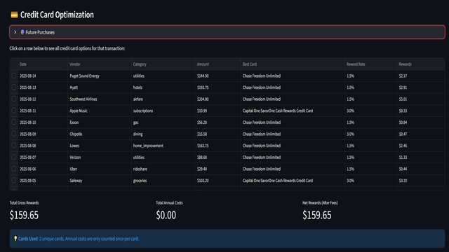

Matthew Huh
Hello, and welcome to my website. My name is Matthew Huh, a data scientist with 5+ years of experience using Python, SQL, Tableau, and machine learning, primarily for finance, fraud, and product analytics at Microsoft, Capital One, and Mt Adams Fruit. My expertise lies in both providing an excellent customer experience through product analytics, but also protecting the business from bad actors.
The purpose of this site is to showcase any work that doesn't neatly fit into my resume, and highlight relevant projects from my Github.
Gallery
Streamlit Projects
Note: Streamlit apps may take a few seconds to load
Tableau Dashboards


Highlights
-
Energy Production in the U.S.
Overview: Broad overview of U.S. energy consumption/production from 1946–2016 with trend extrapolations.
Skills: Data exploration, visualization, regression.
-
Kickstarter Outcome Prediction
Overview: Factors predicting campaign success using feature engineering and ML models.
Skills: Feature engineering, classification, ML models.
-
Clustering News Publications
Overview: Using NLP to differentiate publications via clustering and classifiers.
Skills: NLP, clustering, machine learning.
-
Airline Tweet Sentiment
Overview: Analyzing airline perception using Twitter mentions and NLP models.
Skills: API usage, NLP, classification.
Minor Projects
-
Cancer Diagnostics
Overview: Predict likelihood of cancer based on health factors.
-
Statistical Testing w/ Social Surveys
Overview: Choosing valid A/B tests across sample groups with ESS data.
-
House Price Predictor
Overview: Feature-driven price estimation.
-
Analyzing Airbnb Listings in Seattle
Overview: Market structure and host dynamics.
-
Google Play Store Apps & Reviews
Overview: App categories and user sentiment.
-
Which Debts are Worth the Bank's Effort
Overview: Prioritization heuristics for collections.
Tech Stack
- Business Intelligence - Salesforce, Tableau, PowerBI
- Communication - Slack, JIRA, Confluence
- Programming
- Git, unix, shell
- Python, PySpark, Javascript
- SQL (mysql, Snowflake, RDS), Splunk
- HTML, CSS
- Data science toolkit
- Automation - Airflow,Databricks
- Data manipulation - numpy, pandas,
- Visualization - matplotlib, seaborn, plotly
- Statistics - scipy
- Machine learning - scikit-learn, *tensorflow, *keras
- Web scraping - beautiful soup, scrapy, selenium, REST APIs
- Natural language processing - re, nltk, spacy
- Machine learning models
- Regression - linear regression
- Classification - Logistic Regression, Random forest, Gradient Boosting
- Clustering - KNN
- GIS - ArcGIS, QGIS, Openstreetmap
- Artificial Intelligence (AI) Tools
- Chat applications - Cursor, Github Copilot, OpenAI API, Gemini
- Art - Stable Diffusion, Dall-e mini, Midjourney
Education
- B.A. in Geography (GIS) at University of Washington, Seattle, 2016
- Data Science Course at Thinkful, Remote, 2018
- Misc
- Tableau Desktop 1 / 2
- AWS
Certifications
- Google Analytics
- Google Cyber Security